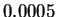

The Display STRFS window provides a graphic display of the estimated STRF, STRF with gain on two axes and temporal modulation, and estimated STRF with Spike-Triggered Average (STA). These options can be selected by clicking the popup menu in the top right of the window.
Figure 3.10 shows estimated STRF with its STA for the auditory data. The upper figure shows the estimated STRF and the lower figure shows the smoothed STA. The Next and Prev buttons help to show the estimated STRF for the different Tol Value. The results of the STRF estimation for the visual neuron example and the STA are shown in Figure 3.11. From the figure, we see that the STA closely matches estimated STRF for tolerance value .